Student: Iñigo Arriazu
Email: inigo.arriazu@estudiants.urv.cat
Date: June 3, 2026
Course: High Performance and Distributed Computing
Created a VPC named lab-vpc with CIDR
10.0.0.0/16 and a public subnet named
lab-public-subnet with CIDR 10.0.1.0/24.
Auto-assign public IP was enabled on the subnet.
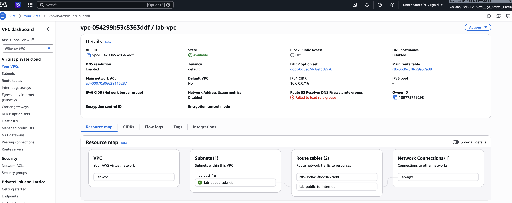
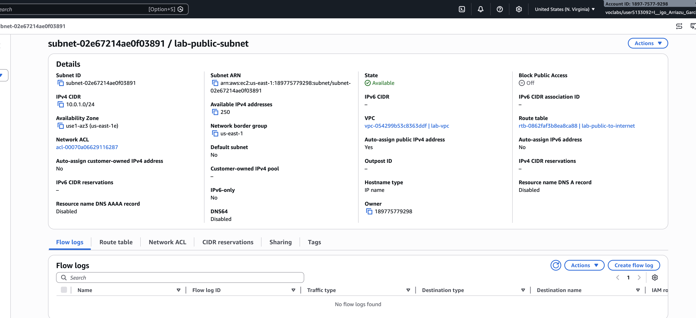
Created an Internet Gateway named lab-igw and attached
it to lab-vpc. This allows traffic between the VPC and the
internet.
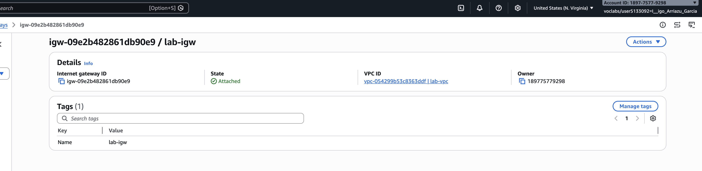
Created a route table named lab-public-to-internet,
added a route for 0.0.0.0/0 pointing to
lab-igw, and associated it with
lab-public-subnet.
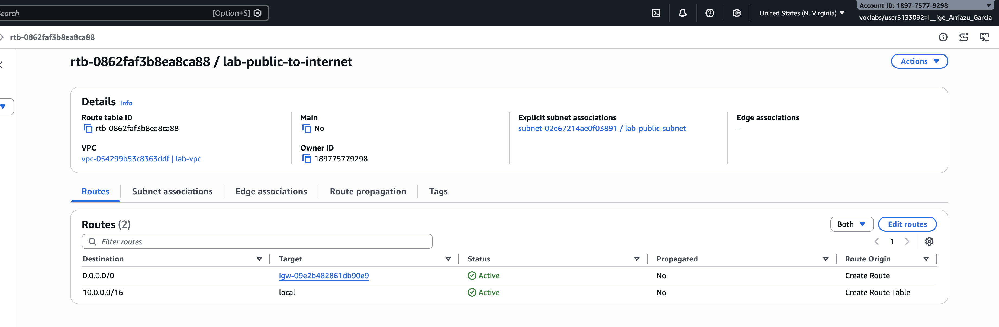
Launched a t2.micro EC2 instance named
lab-public-ec2 in the public subnet with Amazon Linux 2023.
Configured a security group (lab-sg) allowing inbound
traffic on port 22 (SSH) and port 8888 (Jupyter Notebook).
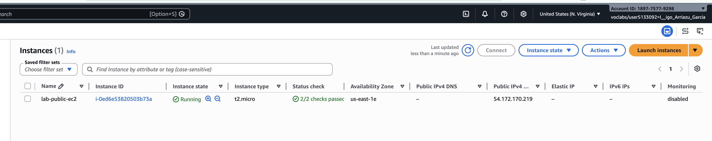
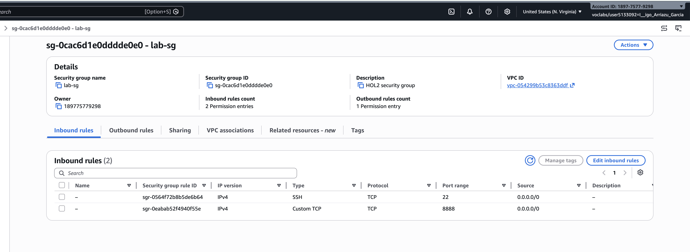
Connected to the EC2 instance via SSH and installed
boto3, jupyter, and pillow.
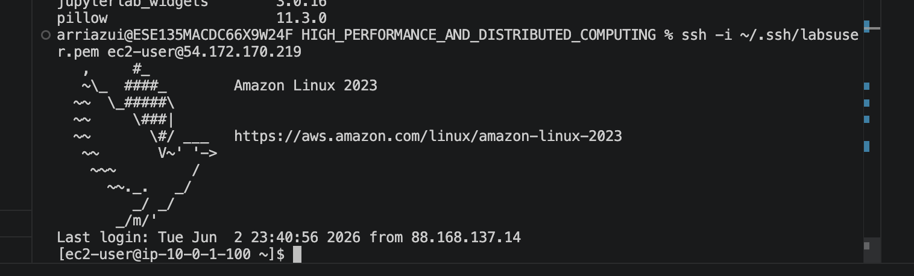
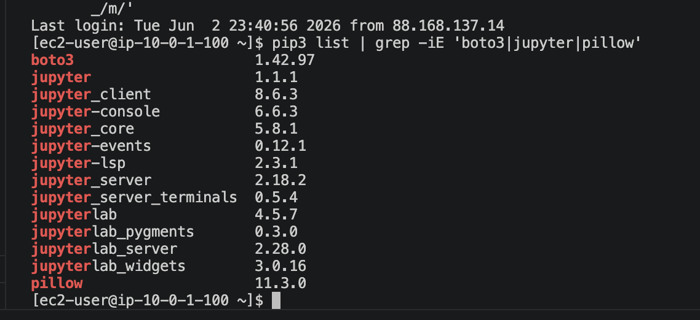
Created two S3 buckets: - lab-input-bucket-arriazu
(receives images from Jupyter) - lab-output-bucket-arriazu
(receives processed images from Lambda)
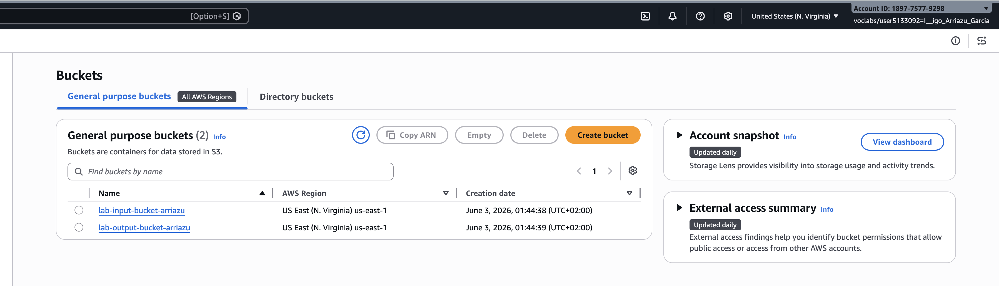
Created a Lambda function named lab-lambda-function with
Python 3.12 runtime. The function downloads an image from the input
bucket, renames it with a -processed suffix, and uploads it
to the output bucket.
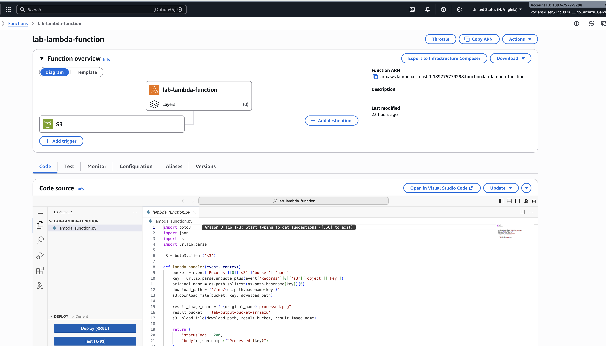
Configured the input bucket to trigger the Lambda function on every
new object creation (s3:ObjectCreated:*).
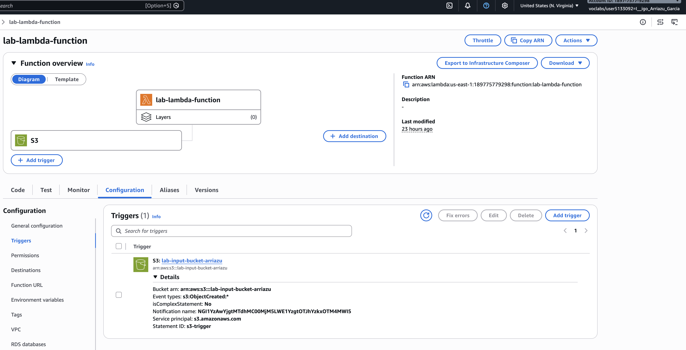
Configured AWS CLI credentials on the EC2 instance by pasting the
session credentials from AWS Academy into
~/.aws/credentials.
Launched Jupyter Notebook on port 8888 and accessed it via the
browser at http://54.160.117.52:8888.
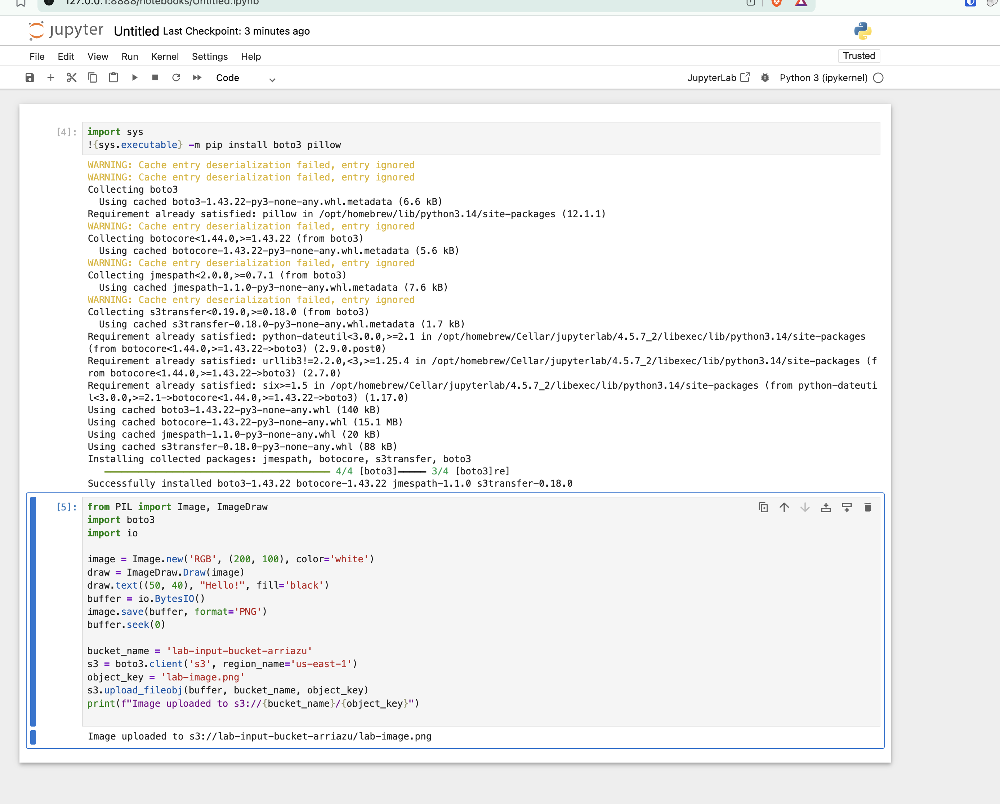
Ran the provided Python code in Jupyter to create an example image and upload it to the input S3 bucket.
from PIL import Image, ImageDraw
import boto3
import io
image = Image.new('RGB', (200, 100), color='white')
draw = ImageDraw.Draw(image)
draw.text((50, 40), "Hello!", fill='black')
buffer = io.BytesIO()
image.save(buffer, format='PNG')
buffer.seek(0)
bucket_name = 'lab-input-bucket-arriazu'
s3 = boto3.client('s3')
object_key = 'lab-image.png'
s3.upload_fileobj(buffer, bucket_name, object_key)
print(f"Image uploaded to s3://{bucket_name}/{object_key}")Output:
Image uploaded to s3://lab-input-bucket-arriazu/lab-image.png
Checked the output bucket and confirmed that
lab-image-processed.png was created by the Lambda
function.
2026-06-03 01:48:15 684 lab-image-processed.png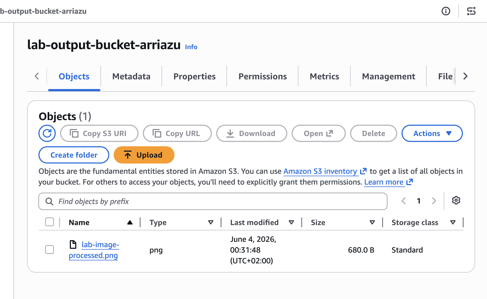
| Resource | Name | ID |
|---|---|---|
| VPC | lab-vpc |
vpc-054299b53c8363ddf |
| Subnet | lab-public-subnet |
subnet-02e67214ae0f03891 |
| Internet Gateway | lab-igw |
igw-09e2b482861db90e9 |
| Route Table | lab-public-to-internet |
rtb-0862faf3b8ea8ca88 |
| Security Group | lab-sg |
sg-0cac6d1e0dddde0e0 |
| EC2 Instance | lab-public-ec2 |
i-0ed6e53820503b73a |
| S3 Input Bucket | lab-input-bucket-arriazu |
— |
| S3 Output Bucket | lab-output-bucket-arriazu |
— |
| Lambda Function | lab-lambda-function |
— |
The complete pipeline works: Jupyter uploads an image to the input bucket → S3 triggers the Lambda → Lambda processes the image and saves it to the output bucket.